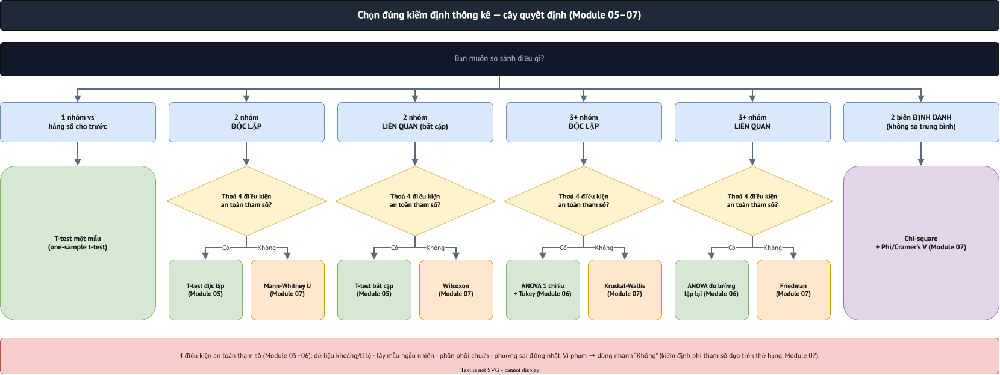

07·卡方检验与非参数检验
第7单元／共12单元 · 内容依据Cohen, Manion & Morrison所著《Research Methods in Education》第8版（Routledge，2018年）第41章第41.4节"The chi-square test"、41.5节"Degrees of freedom"、41.6节"The Mann-Whitney and Wilcoxon tests"、41.7节"The Kruskal-Wallis and Friedman tests"（第789–800页）。
1. 卡方检验（χ²）
卡方检验是定类数据最常用的检验，在列联表中比较观察频数与期望频数。每格期望值=（行合计×列合计）／总合计（第789–790页）。
Cohen等人的例子（第789–790页）：195人（男／女）对喜欢／不喜欢数学投票。卡方值为χ²=28.87，与临界值9.21（0.01水平）相比→28.87>9.21，高度统计显著。表述：“在男性和女性之间发现了统计显著性差异（χ²=28.87，df=2，p=0.000）。”
Yates校正（连续性校正）：弥补2×2表中卡方值被高估的问题；SPSS会自动为2×2表应用此校正。
效应量：2×2表使用Phi系数（阈值与Cohen's d类似：小=0.10，中=0.30，大=0.50）；更大的表使用Cramer's V（第791–792页）。
- 性别×教学方法：χ²(1)=1.37，p=0.243→不显著。
- 性别×学校（2×3表）：χ²(2)=0.14，p=0.932，0%的单元格违反20%规则（结果可靠）→不显著，Cramer's V≈0.024（接近于0）。
2. 自由度
直觉理解（引自Cohen和Holliday，第792–793页）：选择5个总和固定为25的数字→前4个数字可以自由选择，第5个受到约束→df=4=N－1。每增加一个约束就减少1个自由度。
对于列联表：df = （行数－1）＋（列数－1）。书中2×3的例子（第792页）：（2－1）＋（3－1）=3。
3. Mann-Whitney U检验
独立样本t检验的非参数等效版本——用于两个独立样本，至少一个定序变量，无需正态分布假设。基于秩次：计算一组的分数排名高于另一组分数的次数（第793页）。
书中的例子（第793–794页）：按性别进行课程评价（5点量表），U=2,732.500，p=0.019→显著，男性比女性更强烈地认为课程使他们能够按自己的节奏学习。
4. Wilcoxon检验
配对样本t检验的非参数等效版本——用于同一组提供两个数值（两个变量／时间点），但数据不满足参数条件（第795–796页）。
书中的例子：同一组对两个课程变量（“课程时长合适”和“讲师准备充分”）进行评分，结果显著（p=0.000）——该组对“讲师准备充分”的评价更积极。
5. Kruskal-Wallis检验
单因素ANOVA的非参数等效版本——用于3组以上独立组的定序数据（第797页）。
书中的例子：按教龄分为4组的教师对某一课程方面进行评价，χ²=11.595，p=0.009→显著。与Mann-Whitney一样，Kruskal-Wallis不会自动指出哪个组存在差异——必须回到列联表：16-18年教龄组最为积极（第798页）。
6. Friedman检验
重复测量ANOVA的非参数等效版本——用于同一组对3个以上变量／时间点进行评价的定序数据（第798–799页）。
书中的例子：同一组对3个课程变量进行评分，χ²=0.353，p=0.838→不显著，H0得到支持。
7. SPSS/PSPP实践
A. 卡方列联表（性别×教学方法）：
File→Open→Data...→ 选择lop_hoc_240.sav→Open。Analyze→Descriptive Statistics→Crosstabs...- 将
gender送入Row(s)框，将method送入Column(s)框。 - 点击
Statistics...→ 勾选Chi-square和Phi and Cramer's V →Continue。 - 点击
Cells...→ 在"Percentages"部分勾选Total（用于查看期望频数<5的单元格百分比）→Continue。 - 点击
OK→ 阅读"Chi-Square Tests"表，"Pearson Chi-Square"行，Sig. (2-sided)列。
B. Mann-Whitney U（h1评分按性别）：
Analyze→Nonparametric Tests→Legacy Dialogs→2 Independent Samples...- 将
h1送入Test Variable List框。 - 将
gender送入Grouping Variable框，点击Define Groups...→ Group 1输入Nam，Group 2输入Nữ→Continue。 - 确认Mann-Whitney U已勾选（默认）→ 点击
OK。 - 阅读"Test Statistics"表的"Asymp. Sig. (2-tailed)"行——即p值。
C. Wilcoxon（比较评分项目a1与a2，同一组）：
Analyze→Nonparametric Tests→Legacy Dialogs→2 Related Samples...- 在左侧列表中点击
a1，再点击a2，点击箭头将该配对送入Test Pair(s) List。 - 确认Wilcoxon已勾选（默认）→ 点击
OK。 - 阅读"Test Statistics"表的"Asymp. Sig. (2-tailed)"行。
D. Kruskal-Wallis（h1评分按3所学校）：
Analyze→Nonparametric Tests→Legacy Dialogs→K Independent Samples...- 将
h1送入Test Variable List框，将school送入Grouping Variable框。 - 点击
Define Range...→ 在Minimum中输入最小学校代码，在Maximum中输入最大代码（若学校编码为A/B/C，需先通过Transform→Recode into Different Variables重新编码为1/2/3）→Continue。 - 确认Kruskal-Wallis H已勾选 → 点击
OK。 - 阅读"Test Statistics"表的"Asymp. Sig."行。
E. Friedman（3个评分项目a1、a2、a3，同一组）：
Analyze→Nonparametric Tests→Legacy Dialogs→K Related Samples...- 依次选择
a1、a2、a3，点击箭头将三者都送入Test Variables框。 - 确认Friedman已勾选（默认）；如需一致性效应量可额外勾选Kendall's W → 点击
OK。 - 阅读"Test Statistics"表的"Asymp. Sig."行。
Analyze → Descriptive Statistics → Crosstabs → Rows/Columns → Statistics按钮 → 勾选Chi-square、Phi and Cramer's V。Mann-Whitney（Box 41.10）：
Analyze → Nonparametric statistics → Legacy Dialogs → 2 Independent Samples。Wilcoxon（Box 41.11）：...→
2 Related Samples。Kruskal-Wallis（Box 41.12）：...→
K Independent Samples。Friedman（Box 41.13）：...→
K Related Samples。CROSSTABS gender BY method /STATISTICS=CHISQ. NPAR TESTS /M-W=h1 BY gender(1,2). NPAR TESTS /WILCOXON=a1 WITH a2 (PAIRED). NPAR TESTS /K-W=h1 BY school(1,3). NPAR TESTS /FRIEDMAN=a1 a2 a3. * PSPP完全支持CROSSTABS /STATISTICS=CHISQ和NPAR TESTS，结果与Python/SPSS一致。
📜 理论背景与历史
卡方检验由卡尔·皮尔逊（Karl Pearson）于1900年提出，是最早的推断统计工具之一，甚至早于t检验（1908年）和ANOVA（1920年代）。基于秩次的非参数检验发展得晚得多：弗兰克·威尔科克森（Frank Wilcoxon）于1945年提出以他名字命名的检验；亨利·曼（Henry Mann）和唐纳德·惠特尼（Donald Whitney）于1947年将其扩展为Mann-Whitney U检验；威廉·克鲁斯卡尔（William Kruskal）和W·艾伦·沃利斯（W. Allen Wallis）于1952年提出Kruskal-Wallis检验；米尔顿·弗里德曼（Milton Friedman，诺贝尔经济学奖得主，并非专业统计学家）早在1937年作为研究生时就提出了以他名字命名的检验，甚至早于Wilcoxon和Mann-Whitney。
- 1900年——卡尔·皮尔逊提出卡方检验。
- 1937年——米尔顿·弗里德曼提出以他名字命名的检验（早于Wilcoxon/Mann-Whitney！）。
- 1945年——弗兰克·威尔科克森提出符号秩检验。
- 1947年——亨利·曼和唐纳德·惠特尼将其扩展为Mann-Whitney U检验。
- 1952年——威廉·克鲁斯卡尔和W·艾伦·沃利斯提出Kruskal-Wallis检验。
🔎 真实案例研究
案例1——为什么卡方检验的"灵活性"容易被滥用
由于卡方检验只需要定类数据（易于通过问卷调查收集），它被广泛使用——但20%规则（不超过20%的单元格观察数<5）在实践中经常被忽视，尤其是在样本量小、分类较多的调查中（如书中5个学科×2个性别的例子，第791页）。教训是：即使总样本量较大（191人），“看起来还不错”的列联表，如果数据分布不均，仍可能违反规则。
案例2——何时选择非参数检验，而非"强行"使用t检验/ANOVA
在使用5点李克特量表的态度调查中（在教育／心理学研究中非常常见），许多新手研究者仍习惯对这类数据"强行"使用t检验/ANOVA，尽管其本质上是定序的，各等级之间未必是等距的。从假设的角度看，Mann-Whitney/Kruskal-Wallis是更安全的选择——尽管代价是无法像t检验/ANOVA那样直接计算效应量，这是假设的正确性与获得信息的详细程度之间的权衡。
9. 综合决策树：选择正确的检验（第5–7单元）
下图整合了三个单元所学的全部检验选择逻辑：先统计需要比较的组数，再判断是独立还是相关，最后检查4项参数安全条件，从而选出正确的参数分支（绿色）或非参数分支（橙色）。
